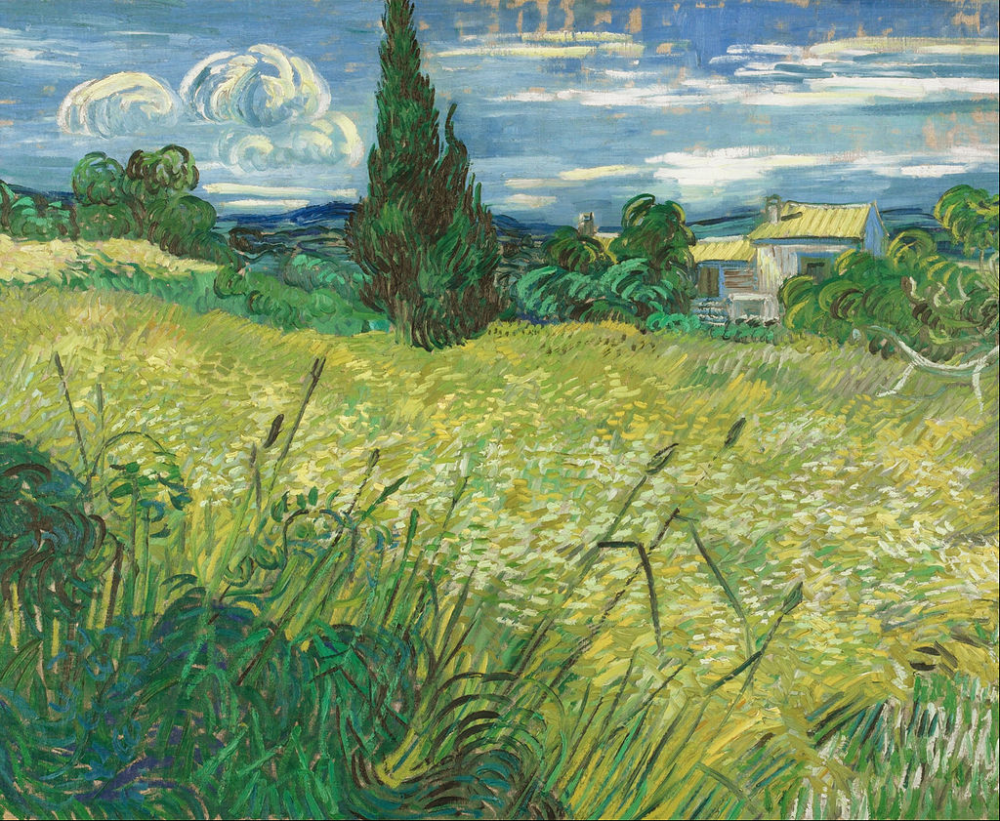

<head>
<meta charset="UTF-8" />
<meta name="keywords" content="drawing, painting" />
<meta name="description" content="drawings by Sunjy" />
<title>Sunjy</title>
<link rel="shortcut icon" type="image/x-icon" href="../../mImages/mCommon/favicon.ico" media="screen" />
<link rel="stylesheet" type="text/css" href="../../mCsses/mCommon/mCssA.css" />
<link rel="stylesheet" type="text/css" href="../../mCsses/mCommon/mCssB.css" />
<link rel="stylesheet" type="text/css" href="../../mCsses/mCommon/mCssC.css" />
<link rel="stylesheet" type="text/css" href="../../mCsses/mCommon/mCssD.css" />
<link rel="stylesheet" type="text/css" href="../../mCsses/mContent/mCssA.css" />
<link rel="stylesheet" type="text/css" href="../../mCsses/mContent/mCssB.css" />
<link rel="stylesheet" type="text/css" href="../../mCsses/mContent/mCssC.css" />
<link rel="stylesheet" type="text/css" href="../../mCsses/mContent/mCssD.css" />
</head>
<script type="text/javascript" src="../../mScripts/mContent/mContentAA.js" /></script>
<script type="text/javascript" src="../../mScripts/mContent/mContentAB.js" /></script>
<script type="text/javascript" src="../../mScripts/mContent/mContentAC.js" /></script>
<script type="text/javascript" src="../../mScripts/mContent/mContentAD.js" /></script>
<script type="text/javascript"></script> 
<script type="text/javascript">
document.write('<div class="mImgAbsolute"></div>');
/*
document.write('<p class="mFontSizeBColor" />From a white paper...</p>');
document.write('<table class="center"><tr><td>');
document.write('');
document.write('</td></tr></table>');
*/
</script>


<script type="text/javascript">
document.write('<p class="mFontSizeBColor" />Green Wheat Field with Cypress</p>');
document.write('<p class="mFontSizeSColor" />“Green Wheat Field with Cypress” by Vincent van Gogh was completed in 1889, while van Gogh was voluntarily incarcerated at the asylum of St. Paul near Saint-Rémy in Provence, France.<br><br>Van Gogh created several paintings of wheat fields with cypresses when he was able to leave the asylum and explore the landscape.  This painting manifests the psychological tension that can be found in some of his other pictures during this period.<br><br>Van Gogh was fond of painting cypresses and wheat fields, and he depicted them many times over the years. They symbolized the cycle of life and death, and he found them inspiring and comforting. <br><br>At the time of this painting, van Gogh wrote to his sister that he had just completed a painting depicting:<br><br>“a field of yellowing wheat surrounded by brambles and green bushes. At the end of the field a little pink house with a tall and dark cypress tree that stands out against the distant purplish and bluish hills, and against a forget-me-not blue sky streaked with pink whose pure tones contrast with the already heavy, scorched ears, whose tones are as warm as the crust of a loaf of bread.”<br></p>');
document.write('<table class="center" /><tr><td>');
document.write('<br>Van Gogh created several paintings of wheat fields with cypresses when he was able to leave the asylum and explore the landscape.  This painting manifests the psychological tension that can be found in some of his other pictures during this period.<br><br>Van Gogh was fond of painting cypresses and wheat fields, and he depicted them many times over the years. They symbolized the cycle of life and death, and he found them inspiring and comforting. <br><br>At the time of this painting, van Gogh wrote to his sister that he had just completed a painting depicting:<br><br>“a field of yellowing wheat surrounded by brambles and green bushes. At the end of the field a little pink house with a tall and dark cypress tree that stands out against the distant purplish and bluish hills, and against a forget-me-not blue sky streaked with pink whose pure tones contrast with the already heavy, scorched ears, whose tones are as warm as the crust of a loaf of bread.”<br>" />');
document.write('</td></tr></table>');
</script>


